套牛是一款很有趣的敏捷小游戏 ，玩法简单有趣，非常适合微信小游戏平台。
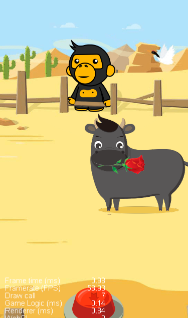
主要操作就是触发套绳按钮，当牛儿不停的奔跑过来的时候，在合适的时机按下套牛按钮就可以捕捉到牛儿。
主要有几个技术点需要考虑：
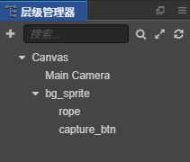
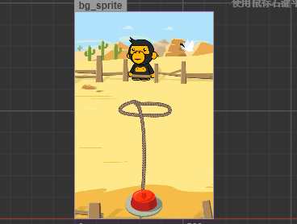
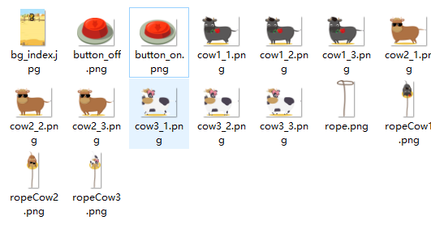
包括背景图片和按钮两种状态，以及套绳等图片。
首先要在资源管理器中新建3个文件夹用来保存对应的资源 scenes，scripts，res
分别用来保存场景、脚本资源和图片等资源
调整尺寸为竖屏640*960，ctrl+s 保存主场景
按顺序搭建，背景 --> 按钮 --> 牛儿 ....
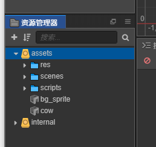
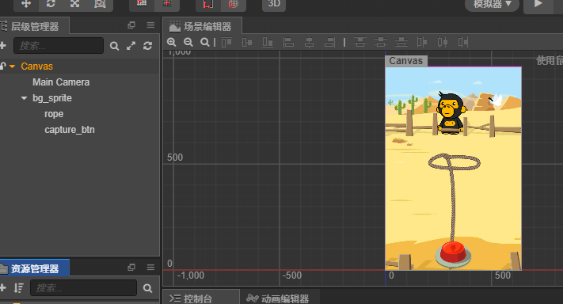
如何让牛儿跑动起来？
让牛儿跑起来只需要用帧动画就可以完成，但是还需要每完成一个回合就切换一种牛的类型。
牛除了跑起来还要让他移动
移动可以使用动画编辑器来实现一个位移动画。
// 用cc.class 生成一个对象，包含数组皮肤const cow_skin = cc.Class({ name:"cow_skin", properties:{ cows:{ default:[], type:[cc.SpriteFrame] } }})xxxxxxxxxxproperties: { cow_sets: { default: [], type: [cow_skin] }},xxxxxxxxxxupdate (dt) { this.intervalTime += dt; // 每隔0.2秒更换皮肤 let index = Math.floor(this.intervalTime / 0.2); // 获取精灵组件 let sprite = this.node.getComponent(cc.Sprite); // let spriteFrame = sprite.spriteFrame; // 获取牛的类型 let cowSet = this.cow_sets[this.type]; // 如果最后一个 重置index if (index > cowSet.cows.length -1) { index = 0; // 重置计时参数 this.intervalTime = 0; } // 设置皮肤 sprite.spriteFrame = cowSet.cows[index]}
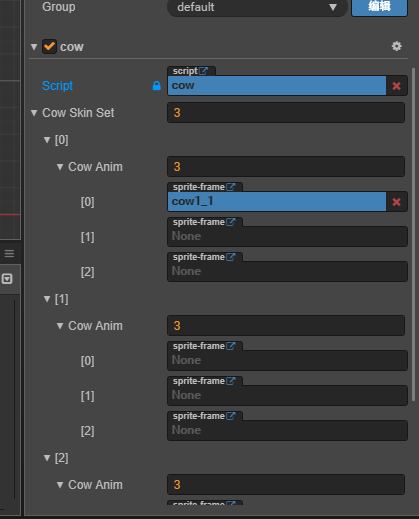
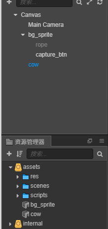
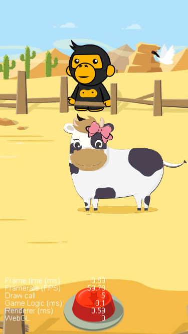
x /** * 捕获按钮点击点击 * @param event * @param customEventData */ clickCapture: function (event, customEventData) { // 激活当前节点 this.rope_node.active = true // siblingIndex是设置节点在父节点中的排序 this.rope_node.setSiblingIndex(100); // 设置当前位置 this.rope_node.y = -480; // 开始动作 const up = cc.moveTo(0.5,this.rope_node.x,0); // 捕捉结果判定 let result = cc.callFunc(function () { const cow_currentX = this.cow_ins.x; if (cow_currentX > -50 & cow_currentX < 50) { console.log("捕捉成功") this.node.removeChild(this.cow_ins) // 更换绳子 let ropeType = this.cow_ins.getComponent("cow").type+1; this.rope_node.getComponent(cc.Sprite).spriteFrame = this.row_imgs[ropeType]; // 生成新的牛 this.cow_ins = cc.instantiate(this.cow_prefab); this.node.addChild(this.cow_ins) } },this); const down = cc.moveTo(0.5,this.rope_node.x,-600); let finish = cc.callFunc(function () { // 换绳子 this.rope_node.getComponent(cc.Sprite).spriteFrame = this.row_imgs[0] },this); let capture_action = cc.sequence(up,result,down,finish); this.rope_node.runAction(capture_action) }创建一个label来显示得分
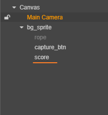
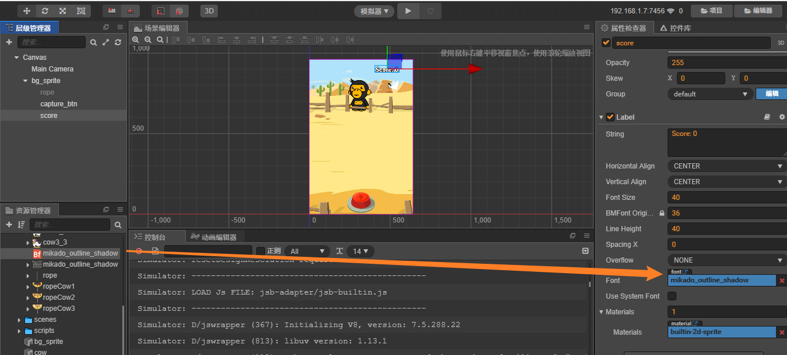
xxxxxxxxxxonLoad () { // 定义初始化得分为0 this.scoreNum = 0;}, // 捕捉成功，分数+1this.scoreNum++;let scoreLabel = cc.find("Canvas/bg_sprite/score").getComponent(cc.Label);scoreLabel.string = "Score: " + this.scoreNum;游戏不能无止境的进行下去，这样会让玩家疲劳且没有成就感，所以我们要加上一个成就系统。
在这个小游戏中我们采用计时制，让玩家在指定的时间内完成游戏。那我们下面首先就需要开发一个计时器功能，比如指定玩家在60s时间内完成游戏，并计算玩家在这段时间内的得分。
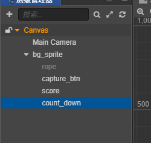
并添加位图字体样式和字体颜色#EB78E6
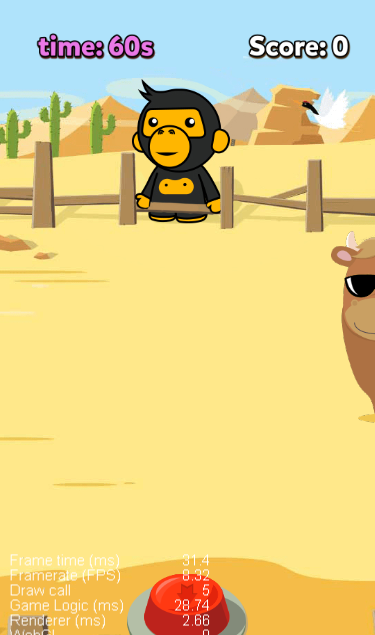
xxxxxxxxxxstart () { // 获得计时器组件 let countDownLabel = cc.find("Canvas/bg_sprite/count_down").getComponent(cc.Label); let time = 60; // 倒计时 this.schedule(function () { time--; countDownLabel.string = "Time: " + time + " s"; },1);},
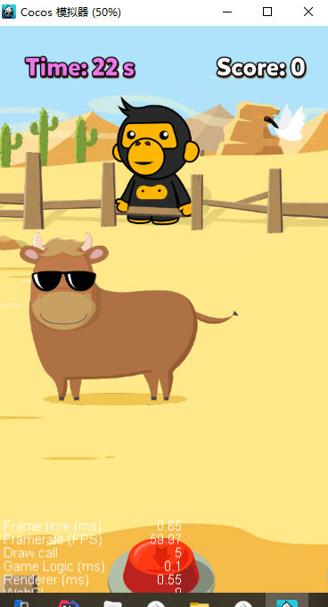
倒计时为0时游戏结束，并根据玩家的最终得分显示成就；比如小于等于3分就是套牛青铜，大于三分小于6分就是套牛高手，大于6分以上就是套牛王者。
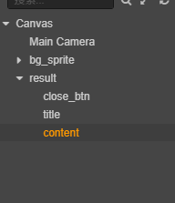
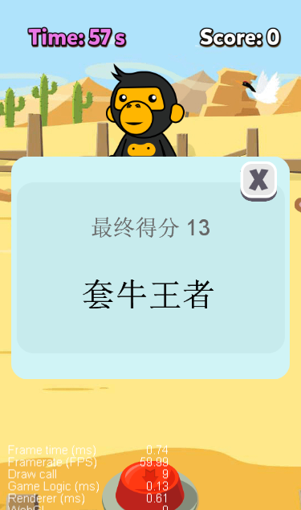
包含一个关闭按钮，标题和称号。
xxxxxxxxxxstart () { this.cow_ins = cc.instantiate(this.cow_prefab); this.node.addChild(this.cow_ins); // 获得计时器组件 let countDownLabel = cc.find("Canvas/bg_sprite/count_down").getComponent(cc.Label); let time = 60; // 倒计时 this.schedule(function () { time--; countDownLabel.string = "Time: " + time + " s"; if (time == 0) { // 获取结果弹窗节点 let resultNode = cc.find("Canvas/result"); // 通过getChildByName获得子节点， title 和 content let titleNode = resultNode.getChildByName("title"); let contentNode = resultNode.getChildByName("content"); // 最终得分显示 titleNode.getComponent(cc.Label).string ="最终得分 "+this.scoreNum ; // 最终成就 let contentLabel = contentNode.getComponent(cc.Label); switch (true) { case this.scoreNum <= 3: contentLabel.string = "套牛青铜"; break; case this.scoreNum < 6: contentLabel.string = "套牛高手"; break; case this.scoreNum >=6: contentLabel.string = "套牛王者"; break; } resultNode.active = true; // 暂停游戏 cc.director.pause(); } },1); },
最终成功展示
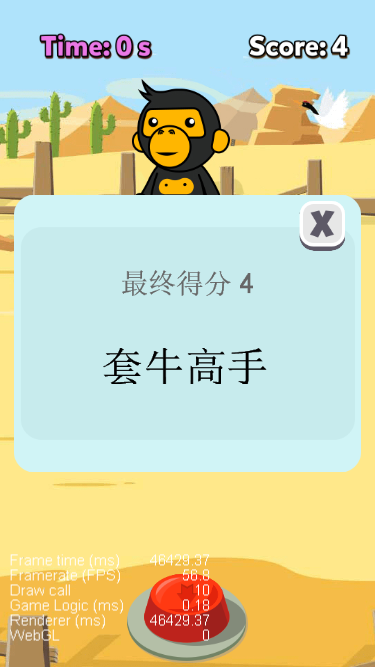
xxxxxxxxxxcloseBtn() { // 游戏继续 cc.director.resume(); // 重新加载整个场景 cc.director.loadScene("game");}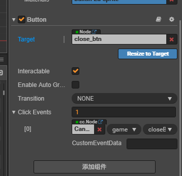